Solar
BBQ
A compact, portable barbecue that cooks sausages using only sunlight,
taken from stakeholder interviews through to a tested aluminium and copper prototype.
41067 Mechanical Systems Design Studio 2, UTS.
- Challenge
- Design a portable barbecue that cooks with sunlight alone.
- My contribution
- Owned several design requirements, helped fabricate the prototype and ran the weight and edge-safety tests.
- Result
- The team built and tested a prototype with twin curved reflectors and a metal cooking plate.
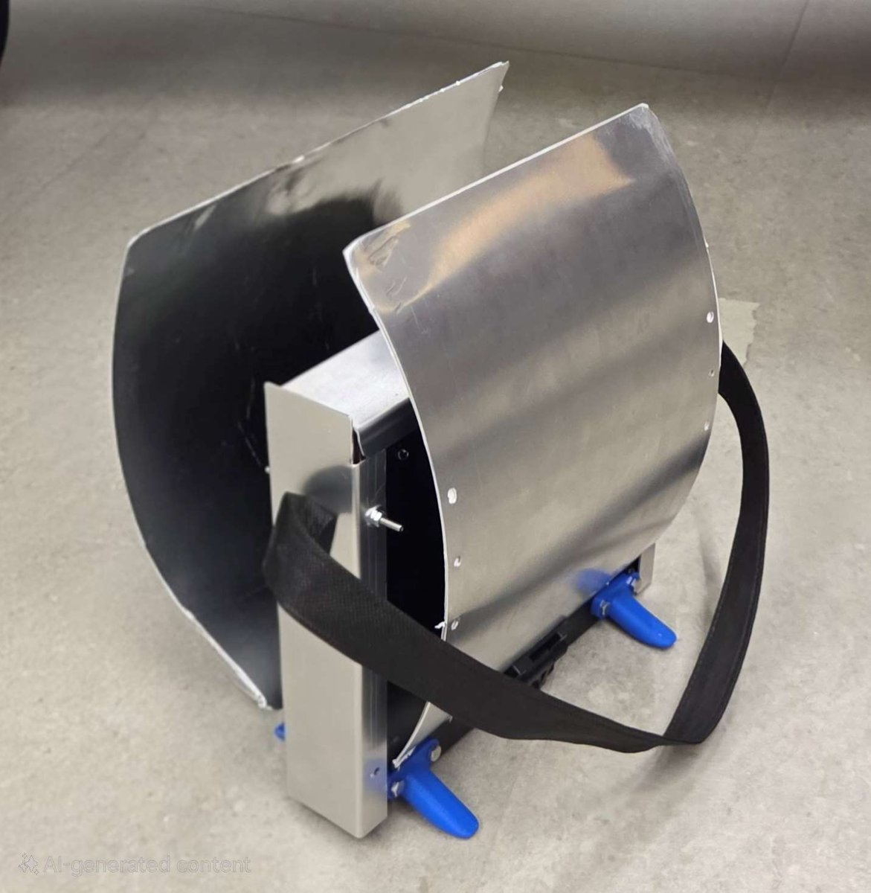
Overview
Our team of four was briefed to design and build a solar-powered barbecue for young adults and couples: people who want a portable BBQ for the beach, camping or a small apartment balcony at a reasonable price. It had to cook six sausages using sunlight alone, carry easily in one hand, and fit inside a 500 × 335 × 295 mm storage tub. It also had to keep users safe from burns, sharp edges and glare reflected into their eyes.
We followed the ADAP³D design process: strategic planning, requirements analysis, problem structuring, idea generation, solution assessment, selection, and risk mitigation. The project ran from February to June 2025 in five components, each building on the last:
- Research. Team contract, stakeholder analysis, requirements, QFD and competitor analysis.
- Ideation. Function analysis, morphological tables, TRIZ, concept scoring and system architecture.
- Risk. Root cause analysis, FMEA and an implementation plan for the mitigations.
- Build. Construction, testing and a live demonstration.
- Documentation. Final drawings and the full design portfolio.
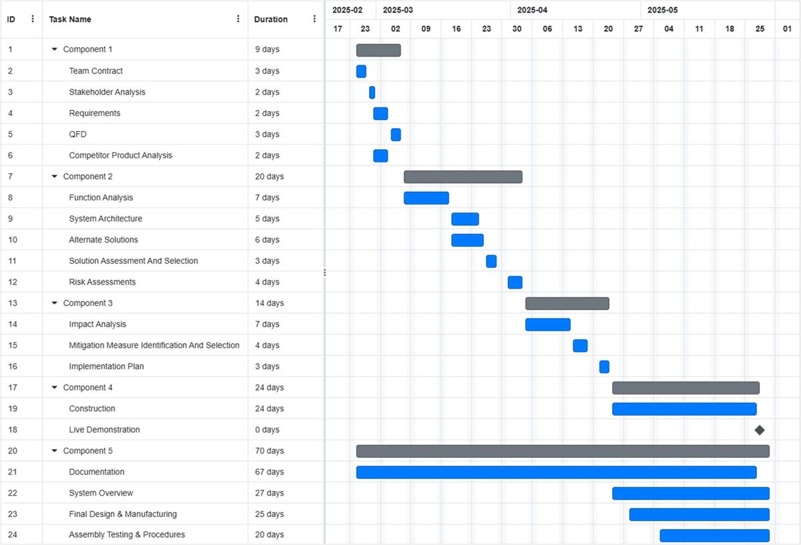
The original project plan. It was reworked later to fit in the concept redesign described below.My Role
I worked on the project with Daniel Bell, Samuel Harris and Charles Orprecio. Each of us led some areas and reviewed the others’ work. My contributions were:
- Requirements. I wrote and owned the requirements for fitting in the storage tub, maximum weight, edge safety, glare and UV exposure, food-safe cooking materials, and the ≤ $270 manufacturing cost target that came from the CFO’s pricing brief.
- Build. I helped source materials and fabricate the prototype in the workshop.
- Review. I reviewed the CAD modelling, technical drawings, prototype development and test plan.
- Testing. I ran the weight test and the edge-safety (deburring) inspection.
Research
Stakeholders
First we worked out who actually had a stake in the product. From a long list of possible stakeholder classes, the relevant ones were internal teams (manufacturing, OHS, quality, R&D, purchasing, management and the customer department), plus three external groups: customers, competitors and suppliers. A process map showed which of them mattered at each phase, from research through ideation, screening, prototyping and testing to production.
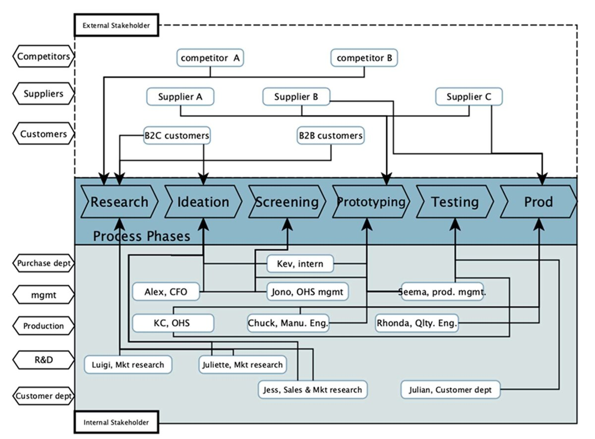
Process-oriented stakeholder analysis: who influences each phase of development.We then scored each of the roughly 30 interviewees from 1 to 5 on power, interest and legitimacy. The highest-priority stakeholders were the senior manufacturing engineer (15/15), the CFO (13), the senior OHS manager (13) and the sales and market research lead (12). Potential users in our target market scored around 10, and people well outside it scored below 5 and weren’t treated as stakeholders.
Requirements
Next we turned the interview statements into requirements. Some came out directly as numbers. “No larger than a case of beer, no heavier than two cases” became a size and weight limit. “Setup should take three minutes or less” became a timed requirement. Others were qualitative needs, such as “nobody ends up with a fried hand from touching the chassis” or “the BBQ shouldn’t direct blinding rays into people’s faces”. We put those through a QFD matrix to give them measurable targets. The final requirements list gave every requirement an owner, a target value and a test method:
- Manufacturing cost ≤ $270 per unit, for a 10% margin at a $250–300 retail price.
- A maximum weight of 5 kg and an extended width of 60 ± 4 cm.
- Must fit inside the 500 × 335 × 295 mm storage tub.
- Full setup in under 5 minutes, with a one-handed carry handle.
- Any surface that isn’t for cooking stays below 40 °C, and every edge is deburred with no sharp corners.
- Stays stable on a 15° slope and survives a 500 mm drop.
- Cooks a sausage in under 20 minutes in full sun, using only food-safe, non-glass materials.
Competitor analysis
We compared seven commercial solar cookers against our targets:
| Product | Type | Weight | Temperature | Price (AUD) |
|---|---|---|---|---|
| GoSun Fusion | Tube | 6.8 kg | Up to 288 °C | $643 |
| GoSun Go | Tube | 0.9 kg | ~200 °C | $192 |
| Energy Wise Premium | Folding oven | 4.5 kg | ~250 °C | $138 |
| WENSHENG Solar Oven | Folding tube | 2 kg | 120–330 °C | $138 |
| Hoiaost 1.5 m | Parabolic dish | 15 kg | ~330 °C | $467 |
| SunGlobe Pack+ | Folding parabolic | 15 kg | 200–240 °C | $806 |
| SolSource Classic | Parabolic dish | 18 kg | ~1000 W output | $806 |
Large parabolic dishes reach high temperatures, but at 15–18 kg and up to 1.5 m across they’re nowhere near portable. Compact tube and folding designs hit our weight and price targets but have limited cooking space. That told us where to aim: something as portable as a tube cooker, with room for six sausages.
Concept Development
Function analysis
A relation-oriented function analysis broke the core task into a chain: capture solar energy → focus it → convert it to heat → distribute heat across the cooking area → heat the food. It also mapped the harmful side effects each step could cause: limited mobility from large collectors, burn risk, the need for cooling, uneven heating, heat loss, material damage and smoke. We rewrote each conflict as a problem statement, for example “how could we generate heat without risking user burns?”, and used those statements to drive the next round of ideas.
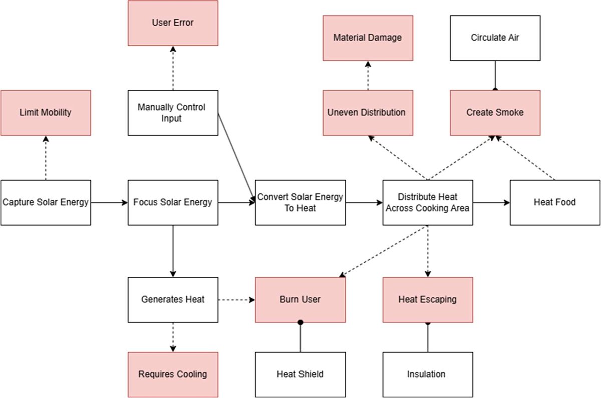
Relation-oriented function analysis. Useful functions are in white and harmful side effects in red.Generating and filtering ideas
We generated partial solutions for each subfunction (focus energy, collect heat, retain heat, stabilise, adjust, carry, store and shield the user) in a morphological table. The options came from competitor products, our own brainstorming and TRIZ inventive principles such as segmentation, nesting and flexible shells. Knock-out criteria removed options that couldn’t do their job. Systematic variation then improved promising ideas that were held back by one flaw. For example, we broke a single large Scheffler reflector into foldable petals to make it portable.
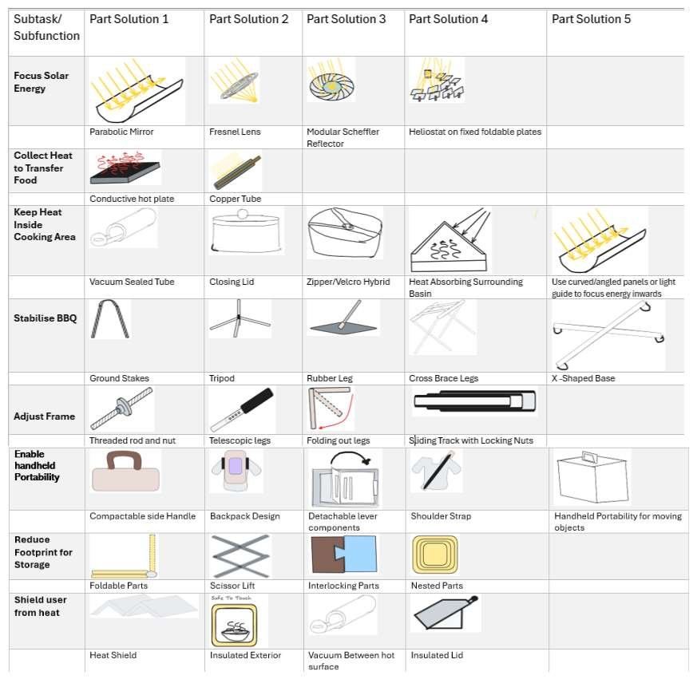
Final morphological table, with a sketch of each partial solution.Six concepts
We combined one option from each row into six full concepts:
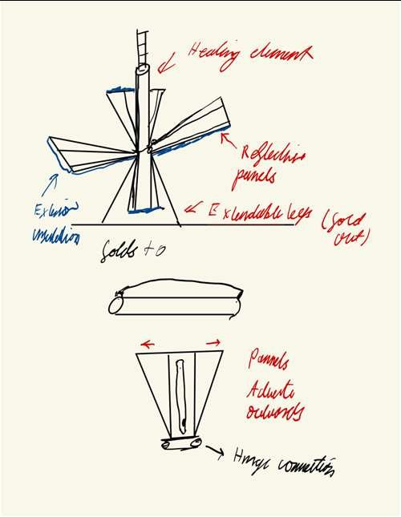
Concept 1: a collapsible tube with four hinged mirror panels on a swivelling tripod.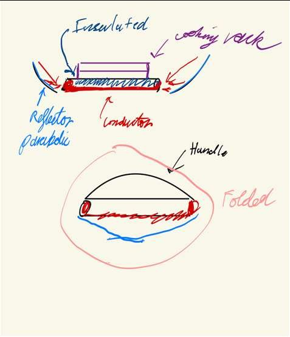
Concept 4: parabolic mirrors heating a conductor that runs into an insulated tube.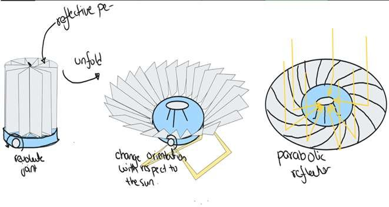
Concept 5: a radial fold-out reflector that opens like a camera aperture.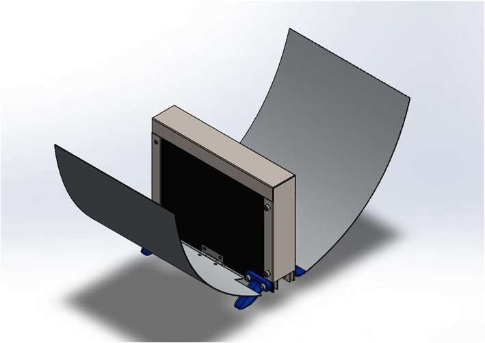
Concept 6, the winning design.Concept 6 has two folding curved reflectors either side of a compact, enclosed “oven-like” cooking chamber on rubberised feet. The reflectors are sized at about 1.68 times the cooking surface area so enough energy reaches the food. The cooking surfaces are aluminium on the food side and black-painted copper on the side facing the light, to absorb and hold heat. Folded, it’s compact enough to carry in one hand.
We ranked the concepts with a qualitative pros and cons list, then pairwise comparisons on weight, size, safety, stability, assembly time, transport, cost and durability. Those scores fed a weighted scoring matrix:
| Sol. 1 | Sol. 2 | Sol. 3 | Sol. 4 | Sol. 5 | Sol. 6 | |
|---|---|---|---|---|---|---|
| Weighted score | 85 | 103 | 98 | 100 | 50 | 124 |
In an earlier iteration, before Concept 6 existed, the tube-based Concept 4 came out on top. Once we added Concept 6 and revisited the scores, it won clearly, ranking first for size, weight, stability, assembly time, transport and durability.
System architecture
A hierarchical function model put cook food at the top, split into its two main branches, heat food and transport BBQ. Each branch broke down into subfunctions such as directing light, storing heat, gathering smoke, carrying and stabilising. The system architecture then mapped every subfunction to a physical component, grouped into four modules: the structural frame and supports, the heating elements and cooking area, heat insulation and retention, and the solar collection and redirection system.
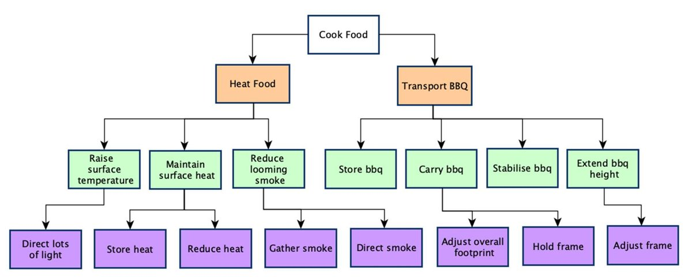
Hierarchical function model.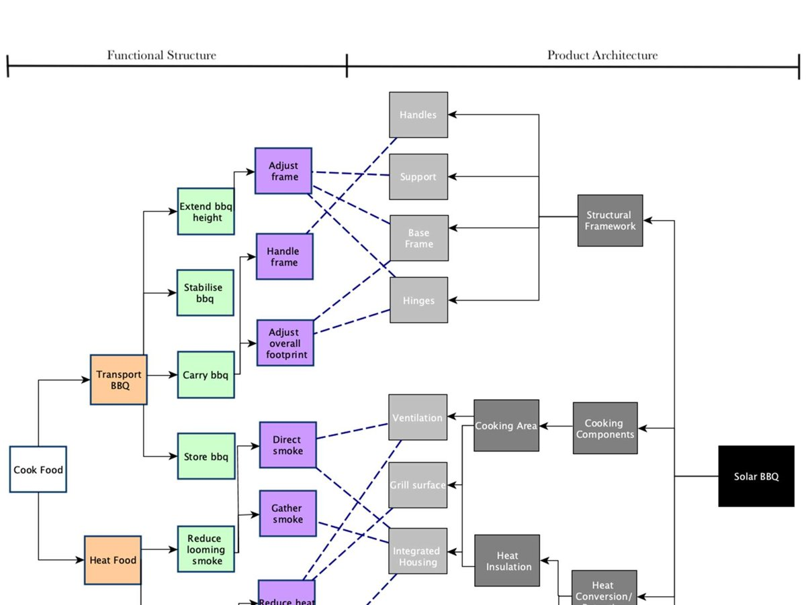
System architecture: functions on the left mapped to components and modules on the right.A late redesign
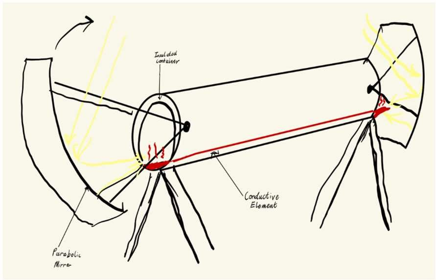
Before: heat carried along a conductive element.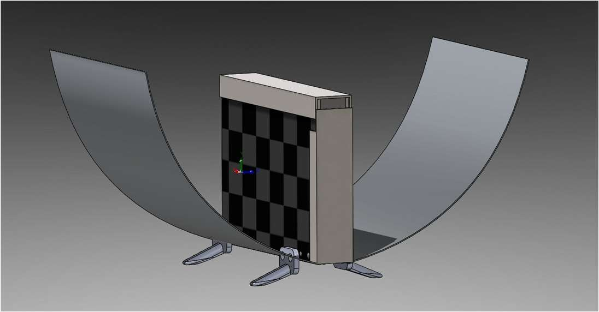
After: reflectors focus directly on the cooking surfaces.Our first chosen concept used a conductive element to carry heat from the reflectors’ focal points into a central cooking chamber. After a design emergency simulation, we and our tutors realised the heat wouldn’t travel evenly along a long conductor. The outer ends would get hot while the centre stayed cool, which would mean slow and inconsistent cooking.
We dropped the conductive transfer idea entirely and reconfigured the design so the reflectors focus sunlight directly onto the cooking surfaces, with the food held between them. That cut thermal losses and simplified the architecture, but it set off a chain of changes:
- Materials. The priority moved from high conductivity to strong heat absorption and retention, so we chose blackened copper.
- Structure. The chamber was reshaped and the food reoriented so it sits between the heated surfaces.
- Safety. Heated surfaces that are more exposed raised new burn risks, which needed guarding and clear handling areas.
- Risk and testing. The FMEA and the test plan were revised. Some failure modes became obsolete, and new ones such as surface warping appeared.
Because the change came late, we had to rework the documentation in parallel and compress the build schedule. It cost us time, but the final product was simpler and worked better.
Risk Analysis
We analysed risk at three levels. Failure cause-and-effect chains traced how each module could fail: smoke reaching the user, heat escaping to handled parts, uneven heating, grease leaking and frame collapse. Each chain identified how to prevent the failure and how to detect it. Root cause analysis went further down each failure to its underlying causes. For example, “distributes heat unevenly” traced back to material selection, gaps in the chamber, misaligned reflectors or flat geometry. A FMEA then scored each failure mode for severity, probability and detectability to prioritise mitigations.
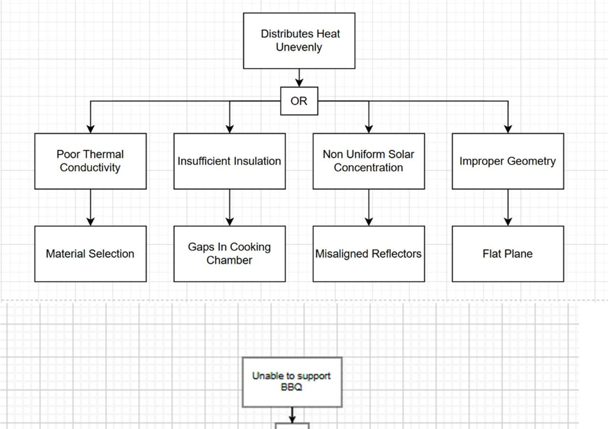
Root cause analysis for uneven heating and structural failure.We implemented four of the five main mitigations in the final design:
- A deeper reflector curve to control where the light goes.
- Only two moving parts, the reflectors on torque hinges, to cut down on loose or failing components.
- A large removable lid that also helps ventilation.
- Heat-sensitive parts, such as the 3D-printed legs, placed away from the hot surfaces.
We deliberately left out adjustable height. Its risk priority was low, and a fixed low stance made the BBQ more stable and safer. We also wrote a workshop risk assessment for every tool we used. The cold saw ranked highest (RPN 216) because of kickback, so we used clamps and blade guards with it.
Final Design and Manufacture
Explore the Solar BBQ in 3D
Inspect the full assembly from different angles.
Load the model to rotate and zoom.
The final prototype has 13 parts and took about 20 labour hours to build:
- Frame. 1 mm aluminium sheet, cut on a manual guillotine, marked out with a scribe for drilling and bending, and folded on a manual press brake. The folded edge pieces trap heat inside the cooking area and give the carry strap something to attach to.
- Cooking plates. Aluminium riveted to 0.7 mm copper backing of the same size and spray-painted black. The copper adds thermal mass so the sausages keep cooking through short cloudy periods.
- Reflectors. Aluminium sheet rolled on a sheet-metal roller to the calculated optimal curve, checked against a 3D-printed arc gauge. We glued mirror paper to the curved surface instead of polishing the metal by hand: it was more efficient than polishing, and the sheets can be replaced when they wear. Resistive torque hinges hold each reflector at any angle.
- Legs. Small 3D-printed PLA legs, bolted to the copper plate outside the path of the reflected light. They keep the centre of gravity low and the BBQ compact.
- Handling. A riveted fabric strap for one-handed carrying, and a removable cover for access to the cooking surfaces.
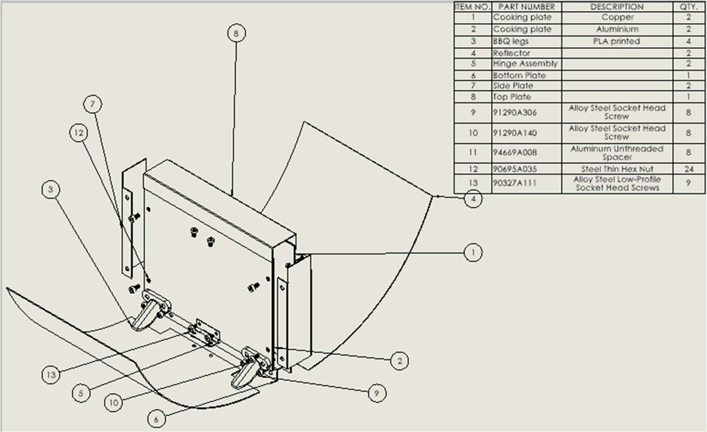
Exploded-view assembly drawing and bill of materials.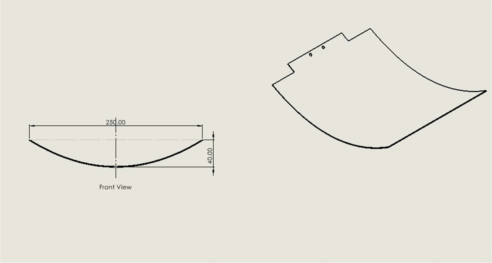
Reflector: 250 mm chord with a 40 mm depth of curve.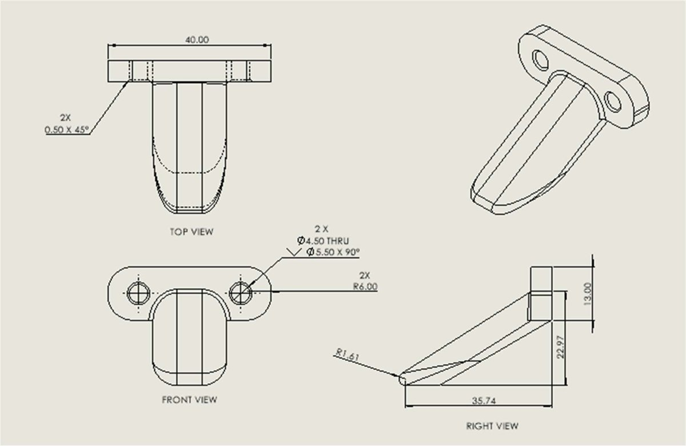
3D-printed PLA leg.Sizing the reflectors
To check that the concept could work, we estimated the energy needed to bring six sausages (500 g, specific heat 2.34 kJ/kg·°C) up by 70 °C to the food-safe internal temperature of 71 °C:
Q = mcΔT = 0.5 × 2340 × 70 ≈ 81.9 kJ
At midday in Sydney in early April, sunlight is about 750 W/m². One square metre of collected sunlight would deliver that energy in about 110 seconds if nothing were lost. The real cook takes much longer because of reflection, convection and conduction losses. The calculation showed the concept was feasible and guided how large we made the reflectors.
Cost
| Item | Supplier | Cost (AUD) |
|---|---|---|
| 1 mm aluminium sheet (frame, heating element, reflectors) | UTS | $240.60 |
| 0.7 mm copper sheet | Williamstown Metals | $64.00 |
| 3D-printed PLA legs | Local print service | $20.00 |
| Torque hinges (×2) | I.R.S. | $16.88 |
| Mirror paper, rivets, bolts and strap | Various | $8.10 |
| Labour (20 h at $100/h) | — | $2,000.00 |
| Total | $2,349.58 |
Materials came to only about $350. Most of the cost was labour, and that was high because the team was new to sheet-metal fabrication. An experienced fabricator could build the same unit for around $850, and batch production with automated processes would bring the unit cost down much further, towards our manufacturing target.
Testing
We linked every testable requirement to a test protocol, with a named tester, a pass condition and what an unsuccessful result would mean for the product.
| Requirement | Test | Result |
|---|---|---|
| Folded size and fits in the storage tub | Tape measure | Passed |
| Extended width 60 ± 4 cm | Tape measure | Passed |
| Weight under 5 kg | Scale | Passed |
| Stable on a 15° slope | Tilted surface and push test | Passed |
| Non-cooking surfaces stay below 40 °C | Infrared thermometer after heating the plate to 70 °C | Passed |
| Edges deburred, no sharp corners | Square, before and after deburring | Passed |
| Set up in under 5 minutes | Stopwatch | Passed |
| Survives a 500 mm drop | Drop test | Passed, minimal damage |
| Cooking surface holds within 15 °C for 10 minutes in shade | Heat, move to shade, measure | Failed: dropped 32 °C in 6 minutes |
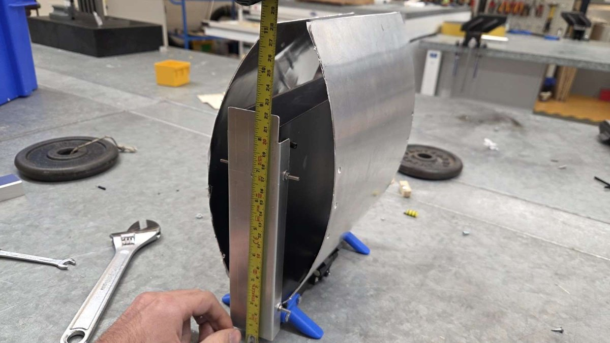
Measuring the folded dimensions.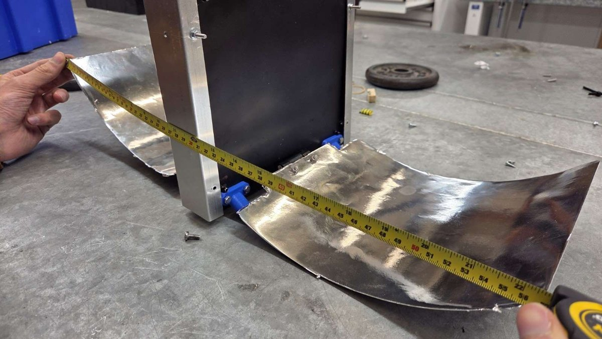
Extended width with the reflectors open.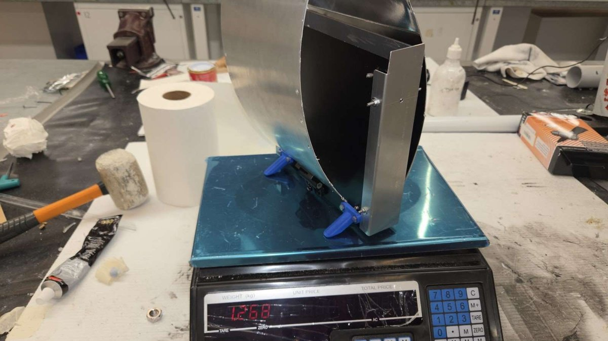
Weight test: under 5 kg.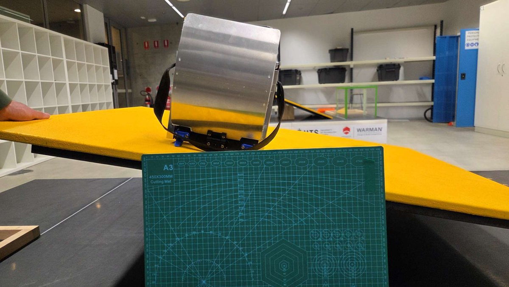
Stability on a 15° slope.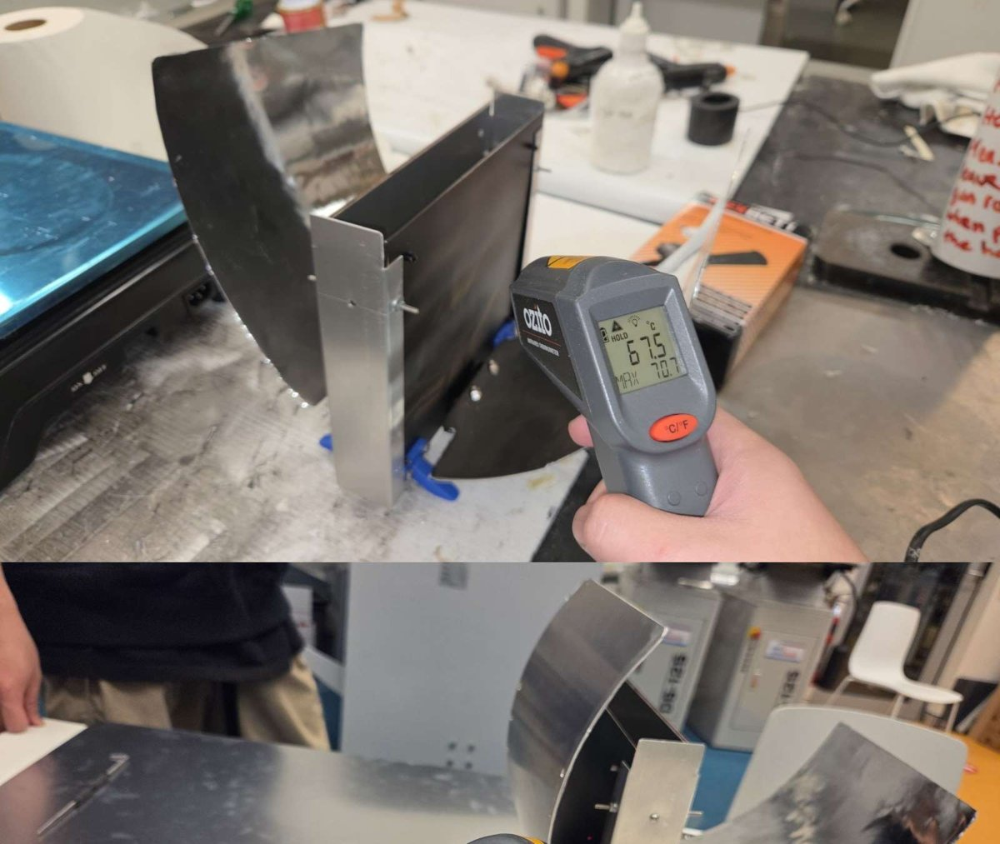
Surface temperature checks.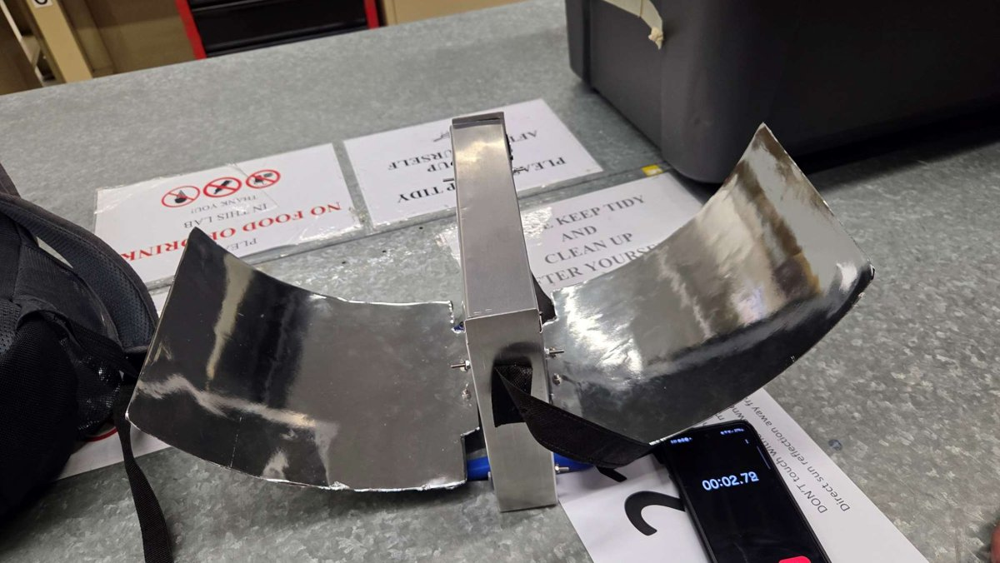
Timed setup: under 5 minutes.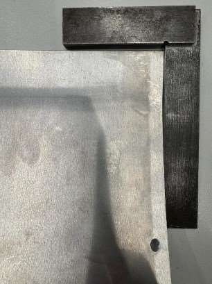
Edge before deburring.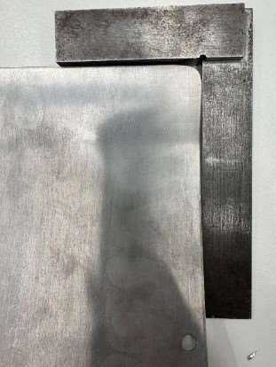
After deburring.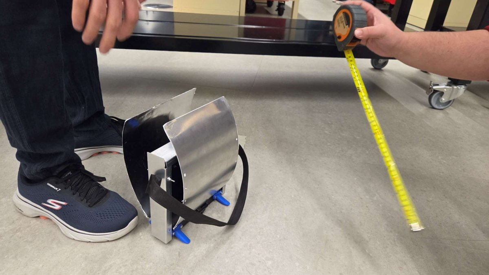
After the 500 mm drop test.The failed heat-retention test showed that the copper backing alone can’t keep the plate hot through a long cloudy spell. As built, the BBQ works best on days when cloud cover lasts no more than about five minutes at a time. Insulating the chamber walls or adding thermal mass would be the obvious next step. The full-sun cooking requirements (cooking a sausage in under 20 minutes, reaching 80 °C within 5 minutes, and peak temperature) were left to be confirmed in outdoor testing on demonstration day.
What I Learned
- Structured design methods. I used stakeholder prioritisation, QFD, morphological tables, TRIZ, pairwise and weighted scoring, system architecture, FMEA and root cause analysis on a real product. Each tool’s output fed directly into the next, which made our decisions traceable and easy to defend.
- Changing direction. The late redesign was painful for the schedule, but dropping a concept that wouldn’t heat evenly was the right call. I learned to keep documentation flexible enough to change quickly, and to raise feasibility doubts early.
- Sheet-metal fabrication. I got hands-on with the guillotine, press brake, sheet roller, riveting and 3D printing. I also saw how much fabrication experience, or the lack of it, drives labour cost.
- Honest testing. Linking every requirement to a test made it clear what we had actually achieved and what we hadn’t. The failed heat-retention result points to a clear improvement for the next version.